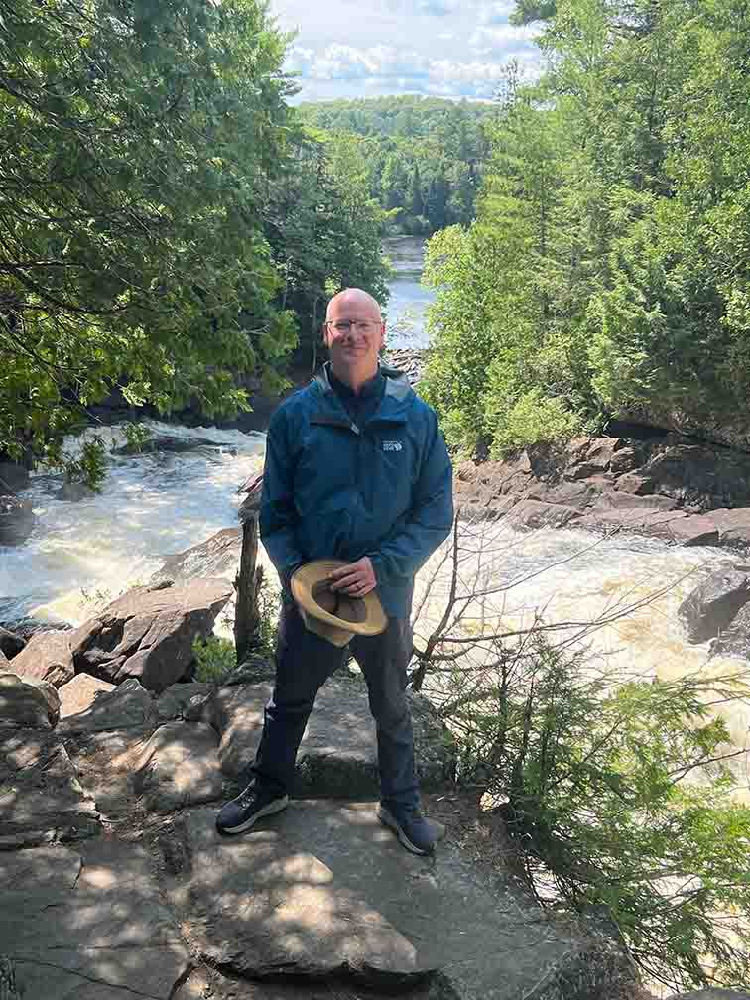

👋 I’m Jamie Irwin
I'm an IT professional turned web developer, combining a solid background in networking and electronics with a passion for creating intuitive web experiences. I’m a graduate of triOS College’s Web Dev program, certified in cybersecurity, and a licensed private pilot (yes, really).
Whether I’m wiring a network rack or designing a slick UI, I bring precision and curiosity to every challenge. Always learning. Always building.
💻 10+ Years in IT
📠Diploma in Web Dev
📠Diploma in Computer Networking
📠Diploma in Electronics Technician
🛡️ Certificate in Cybersecurity
ğŸ› ï¸ My Toolbelt
📠Professional Projects
- Internship – Smashing Pixels (Soon)
- Project Manager – Cisco AV / IMAX
- Started own IT business
- Client Network Setup & Server Rack Install
🧰 Personal Accomplishments
- Home Media Server (Ubuntu + Plex)
- PC Builds – Friends & Family
- Secure Network Architecture
- Aviation Personal Pilot License
🅠Certifications & Highlights
- Diploma – Web Development (triOS)
- Diploma – Computer Networking (Mohawk)
- Certificate – Electronics Technician
- Certificate – Cybersecurity